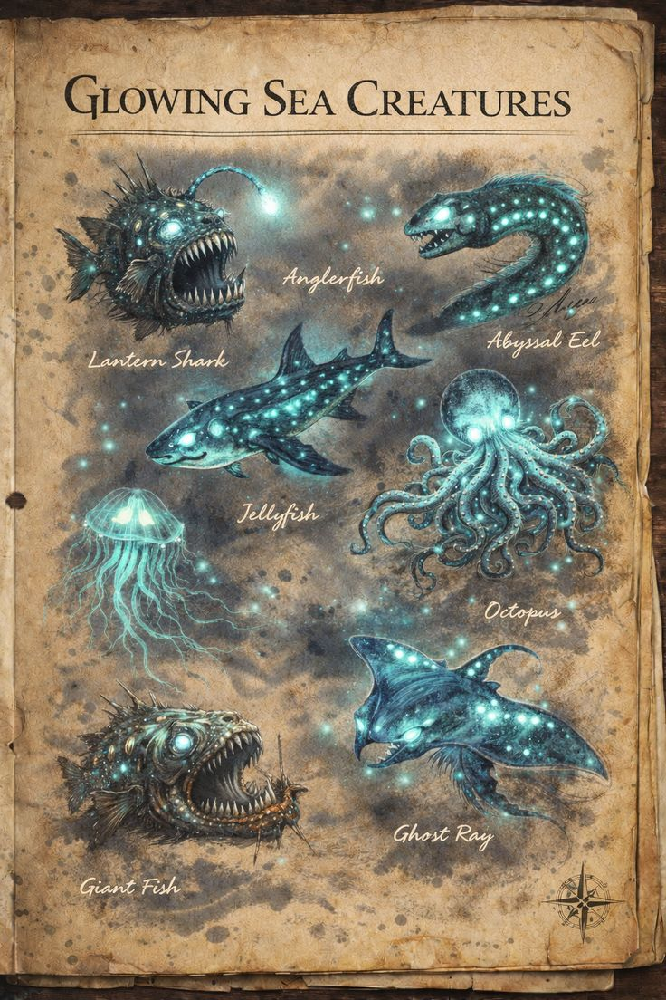
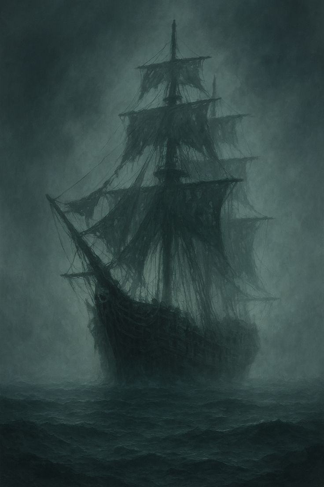

Mitos Marinos
Cargando mitos...

⬅ Volver a Mitología Marina
Criaturas Legendarias
El océano no tiene memoria, pero guarda secretos. Allí donde la luz se ahoga, habitan los verdaderos dueños del abismo.

Barcos Fantasma
Historias de navíos perdidos en el océano.

Dioses del Mar
Descubre las deidades marinas de distintas culturas.
⬅ Volver a Mitología Marina
Puntos: 0